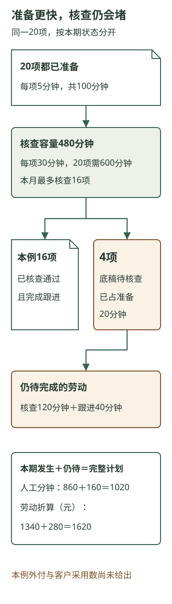

智能投入怎样转成客户结果
本章内容
研究助手准备底稿更快，是否意味着公司用更少投入完成了同样服务？前面的工作已经说明，准备之后还有专业核查、客户联系和采用；应用本身也需要维护。局部变快，要经过这些环节，才可能改变整项服务。
下面为咨询公司新增一组完整的月度教学条件，用同一批任务比较两种安排。全部时间、费用与结果均为演算假设，并非前章那次服务的实测。
一、先把要完成的工作固定下来
比较期间是同一个月，应覆盖20项范围相同的研究委托。两种安排都要满足同样的来源可靠性、适用性和交付期限要求。这里的20项是研究任务数，可能来自同一客户的不同事项，也可能分属不同客户。
原安排已经使用模板、来源归档和检索。研究员仍需阅读材料、组织本次比较、准备底稿，顾问作专业核查，之后还有联系与跟进。AI安排让助手参与准备，保留相同的核查和跟进要求，并增加维持这套安排所需的月维护。
先假定，两边当月都形成20份合格结果，其中各有12份实际进入客户后续讨论。“进入讨论”说明研究被用于继续处理事项；它还没有给出建议是否执行、产生多少收入或利润。另有8份没有进入讨论，它们的准备和交付仍真实耗用了资源，也全部进入下面的账。
这一组相同结果，使我们能够先判断：维持同样覆盖与交付，投入发生了什么变化。若实际两边的质量、时限或采用不同，就要把差别重新放进比较，不能只保留较低的费用。
二、从每项劳动算到当月完整安排
以下表中列的是人的作业时间。模型运行和等待另外观察，不混入人工分钟。
左右滑动查看完整表格
| 当月劳动 | 原安排 | AI安排 |
|---|---|---|
| 准备材料与底稿 | 20×30＝600分钟 | 20×15＝300分钟 |
| 专业核查与本轮纠错 | 20×20＝400分钟 | 20×20＝400分钟 |
| 联系与跟进 | 20×10＝200分钟 | 20×10＝200分钟 |
| 本安排新增的月维护 | 0分钟 | 120分钟 |
| 人工合计 | 1200分钟 | 1020分钟 |
原安排维护一栏的0，只表示本张比较账没有增加这一项劳动。公司原有软件、归档和人员支持仍在，两边共同的既有投入也没有凭空消失。
为比较劳动占用，再给这组时间一个折算口径：准备、跟进与维护按60元／小时，即1元／分钟；专业核查按120元／小时，即2元／分钟。它反映不同劳动的占用，员工当月工资并不会随着每少做一分钟同步减少。
原安排的劳动占用为600＋400×2＋200＝1600元。AI安排为300＋400×2＋200＋120＝1420元。再假定AI安排当月支付模型费80元、搜索费20元，得到：
左右滑动查看完整表格
| 本次比较的投入 | 原安排 | AI安排 |
|---|---|---|
| 劳动占用折算 | 1600元 | 1420元 |
| 本表新增模型与搜索外付 | 0元 | 100元 |
| 已列劳动折算加外付 | 1600元 | 1520元 |
这里原安排的外付0，同样只针对表内新增项目；共同既有费用暂不计入差额。为上线新增的开发、培训、停顿，以及可能的延期后果，还需另列，当前没有数值，不能默认为零。因此，1520元是本表所列范围的合计。
三、180分钟和80元，分别改变了什么
AI安排的准备劳动少了300分钟，新增维护又占去120分钟，净少180分钟。专业核查仍是400分钟。释放出来的是准备等劳动的净余量，尚未增加顾问能处理重要判断的时间。
这会影响它能转成什么。研究员可以把可用时间用于联系材料、减少积压或其他研究准备；若公司准备增加服务量，还要看顾问能否核查、客户能否及时提供事实。即使总分钟减少，也不能将180分钟直接当作180分钟的专业容量。
在本次折算口径下，劳动占用少180元，新增外付100元，差额为80元。它不是已经少发的80元工资，更不是净利润。工资照常支付时，公司得到的首先是另一种使用人员时间的可能；现金支出则新增了模型与搜索的100元。是否减少加班、避免外包或形成新收入，还要取得对应事实。
这组假设也没有使客户采用增加：两边均有12份进入讨论。AI在这里支持的是以较少的已列投入维持同样结果。若顾问统一在固定时点讨论，提前准备底稿也可能只是增加交付前的余量，客户等待尚未缩短。时间、现金和客户结果要各自找到发生变化的环节。
另一种合理选择，是继续改进普通软件。假如来源结构稳定，很多准备劳动只是按固定格式提取和归档，模板与检索改进也可能把每项准备降到15分钟。再明确增加一个比较分支：它的核查、跟进也分别为20和10分钟，月维护同为120分钟，质量、期限与覆盖仍相同。那么，它的人工时间同样是1020分钟，劳动占用同样是1420元。
这个分支没有给出普通软件新增的开发和外付，暂时不能据此比较最终费用；但它已经说明，准备提速不必全部归功于模型智能。选择AI还需要看，工作是否需要随目的理解材料、处理不固定的关系，以及它相对其他可行安排增加了什么。若普通软件已满足相同工作要求，就应进入实际候选，而不是只与较慢的旧做法比较。
四、只处理容易的15项，不能算成完成20项
现在改变覆盖范围。一种低价安排从20项中只选了容易的15项，另外5项因为材料不规整或需要复杂比较，没有接入。这时即使每项调用便宜，回答的也只是部分任务。
先把去向接上：这15项进入新安排，另外5项仍需留在原研究流程，由团队接手并安排核查与交付。比较时，要把后5项实际发生的劳动、等待与费用加回来。如果人员已无容量按期处理，就要明确哪些委托延迟，或与客户改变范围；延迟和放弃会改变原来“同样20项、同样期限”的条件。
这里没有给出15项的新工时、费用和合格数，也没有给出后5项实际需要多少劳动，因而不能计算新的总节省。容易任务的表现未必代表较难任务；每月维护又不会自动随任务数同比减少。把1020分钟或1520元直接乘以15／20，会同时掩盖剩余工作和固定投入。
任务的起点仍是20项委托。只有把处理、转交、延迟或取消分别记清，才知道低投入来自方法改善，还是来自少做了一部分原本需要完成的服务。
五、准备更快，为什么会积压更多
再回到完整20项，只改变劳动结构：每项准备降为5分钟，核查却增为30分钟，跟进仍为10分钟，月维护仍为120分钟。可能的原因是准备稿虽快，却缺少关键对应，顾问需要更多时间重看和纠错；这里以这组新增教学工时进行比较。
假定当月可用于专业核查的容量为480分钟。基础AI安排的20项只需400分钟，能够容纳；新变式则需要20×30＝600分钟，超过120分钟。本月最多核查480÷30＝16项，另4项待核查。核查容量只能说明能处理多少，尚不能保证处理后全部合格。
为了继续区分计划与已经发生的劳动，再加一个局部演算条件：20项都已各准备5分钟，前16项均已核查通过并完成跟进，维护120分钟也已发生。此时任务去向是16份合格结果，以及4份已经准备、尚待核查的底稿。
左右滑动查看完整表格
| 劳动去向 | 完整20项计划 | 本期已发生 | 仍待完成 |
|---|---|---|---|
| 准备 | 100分钟 | 100分钟 | 0分钟 |
| 专业核查 | 600分钟 | 480分钟 | 120分钟 |
| 跟进 | 200分钟 | 160分钟 | 40分钟 |
| 本月已列维护 | 120分钟 | 120分钟 | 0分钟 |
| 人工合计 | 1020分钟 | 860分钟 | 160分钟 |
| 同口径劳动折算 | 1620元 | 1340元 | 280元 |
完整计划的劳动折算是100＋600×2＋200＋120＝1620元。与基础AI账相比，总人工分钟仍为1020，更多劳动却转到了专业核查，因此折算占用增加200元。相同总时间，可以形成不同的资源压力。
本期发生的劳动为100＋480＋160＋120＝860分钟，折算1340元。尚待的160分钟包含专业核查120分钟、跟进40分钟，折算280元。两者相加才对应完整计划。4项未完工作已经占用了20分钟准备，还可能消耗了模型与搜索；后面的劳动尚未做，不能叫作节省。
这组变式没有给出新的外付，也没有给出16份合格结果中有多少进入客户讨论，因而不能沿用基础账的100元外付或12项采用。更不能用12／20直接推算客户会采用多少。每个阶段的实际结果，都需要自己的依据。
如果4项下月继续，它们会与下月新委托争夺同一批专业时间，还可能需要更新材料和增加维护。把它们移到下月，只是改变完成时期，并没有让工作消失。

六、下一笔投入，应改变哪段工作
对这个拥堵变式，继续增加底稿生成量无法增加顾问的480分钟。团队需要先查清核查为什么增到30分钟：是依据没有对应、重要条件被省略，还是任务确实更复杂？如果改善准备能让顾问少做重建关系的劳动，前端增加适当模型或工程投入，就可能比继续压低准备费用更有用。
另一条路是增加专业容量，但要取得真正可参与的人员与时间，算入新增投入。若当前做不到，可以调整受理节奏、先完成已承诺任务，并与客户明确延期范围。它们都是有代价的选择；任务数量和期限一旦改变，就应按新的条件评价。
还要看客户需要什么。基础账中有8份未进入讨论，不意味着那8份都毫无用途，但值得追问：它们是必要观察、尚待时机，还是原本没有对应事项？若是服务用途不合适，单纯提高合格产量仍可能继续消耗资源。若只是讨论窗口尚未到来，则要保留等待事实，不能提前把采用记满。
因此，智能投入的转换要沿整项工作理解：资源参与准备，准备要经过核查形成合格结果，结果还要在合适时点进入客户工作。企业通过完整任务账辨认哪段关系受限，再决定增加、重配或停止哪一项投入。当前账没有多交付的部分，也可能形成将来可用的方法和认识；是否值得为此投入，需要把下一轮的用途一并考虑。
来源与延伸
本章全部研究任务、工时、折算、费用与结果为教学设定。同任务比较、准备与核查容量、未完任务和跨期积压的关系，可对照旧第15章的报价演算。本章重新建立咨询研究的月账，没有把报价通过率、收入假设或原项目表现移入这里。
模型资源与完整工作安排的区别，延续前章；实际企业使用这张账时，需要用自身的任务记录、劳动、费用、质量和客户采用替换假设。